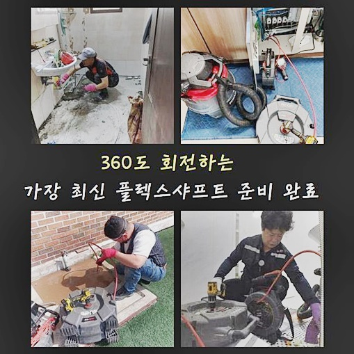
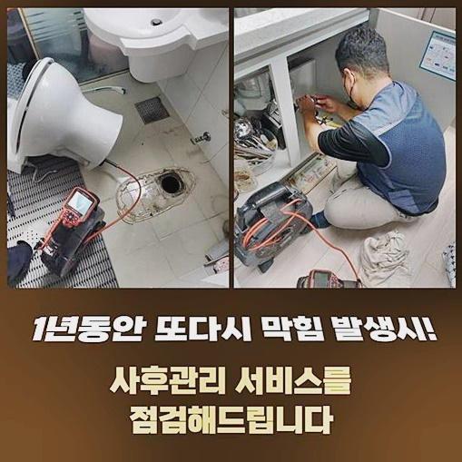
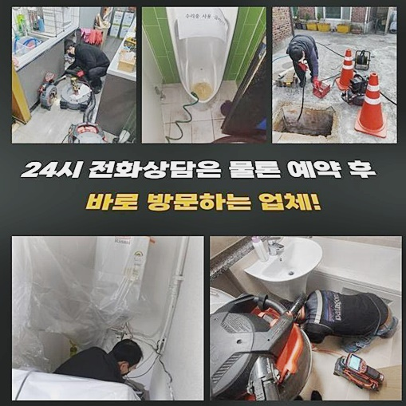
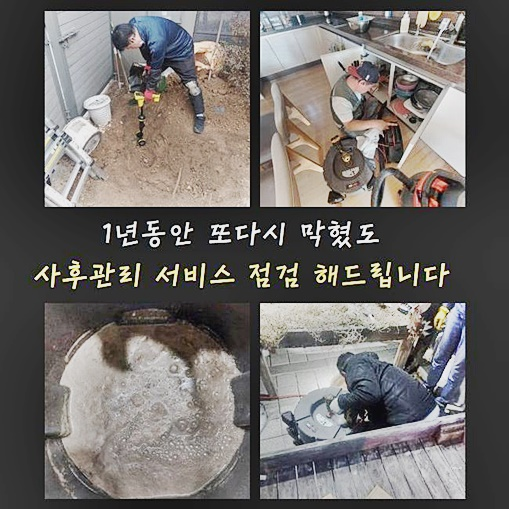
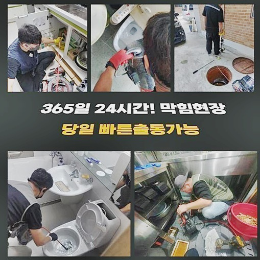
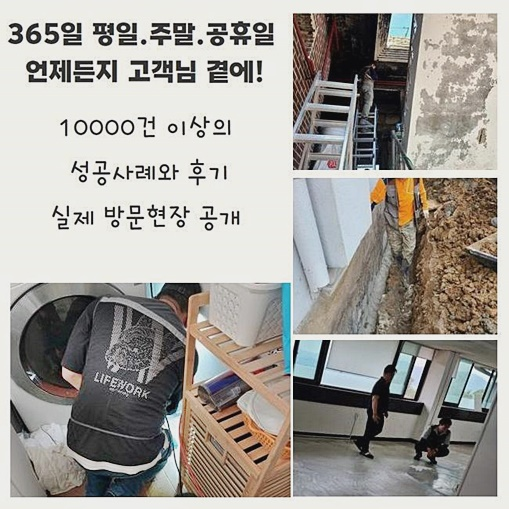
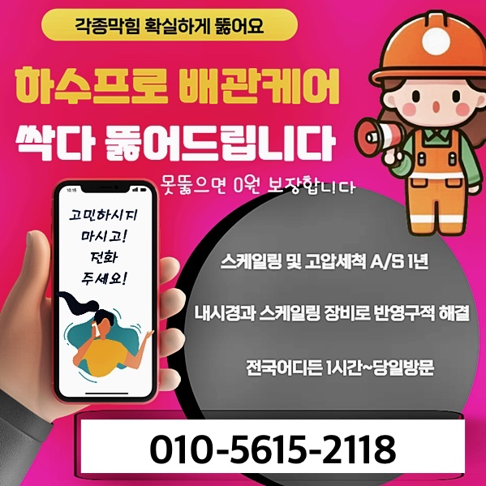

🏠 양주 삼숭동화장실하수구역류 광적면 하수관고압세척 배관설비공사
용인시 처인구 배관막힘 전문 시공 후기

📋 작업 개요
- 위치: 용인시 처인구, 수원시 영통구, 화성시 동탄
- 서비스 유형: 배관막힘, 누수수리, 배관수리, 고압세척, 내시경점검
- 작업 일시:
- 업체명: 하수구수사대 (010-5615-2118)
🔍 문제 상황
양주 삼숭동화장실하수구역류 광적면 하수관고압세척 배관설비공사
오늘내방한 작업장소는 상가건물로 이루어진 현장이었어요
상가건물쪽에서 하수구문제가 발발되었다는건 장기간 하수구내부에 오염물이 쌓여있을확률이 높은상태인만큼 빠르게 대처해야합니다
만약에 방치하신다면 빠르게 건물전체의 피해가커지고 물이용이 어려워지므로 영업하는데 차질이발생하는 좋지않은결과를 초래시키기에 주의해주셔야 합니다
건물을 관리해주는분께서 설비를 진행하시다가 막히게된것이라는 전달을받았어요
자체적방법으로 보유중인 장비들을써서 직접뚫으려고 작업을해봤지만 해결될기미를 보이지않아 긴급히 저희들에게 연락주신것이었어요
배수관막힘이 일어나게되었을때 직접시도하는건 위험한행동이에요
막힘증세가 발생되는 정확한원인을 설명드리면 하수구내부에 쌓여진이물을 꼽을수있습니다
자가적인 조치를통해 배관수리를 강행하신다면 일시적인효과성을 받아볼수있지만 배수관내부 안으로 잔해물들을 밀어버리는 경우로이어져 오히려현상을 심화되게 만들수있죠

🔎 원인 분석
💡 전문가 진단: 정밀 진단 장비를 사용하여 슬러지의 고착 여부를 판명하고 타격/세척 작업을 실시했습니다.
겉으로증세가 나타나고있다면 상황을 살피신후 바로 전문가의 도움을통해 해결해보시는게 올바른 해결책입니다
상가건물특성상 빨리 해결하지못하면 동시에 여러세대에서 막힘이 발현될겁니다
문제가 불거지는것을 방지하고자한다면 정확한원인을 살펴서 제거해주는게 중요해요
다짜고짜 장비를넣어서 진행하는것보다는 배관카메라처럼 원인파악이 가능한도구로 검수작업을 우선으로 진행해줘야해요
내시경은육안으로 살필수없는 배관속을 확인시켜주는 장비라고할수있죠
물길흐름에 맞춰서 점검해주면 막힘발생 지점뿐아니라 오염물성질까지 살필수있으므로 정확하게 작업계획을 진행할수있는것이죠
현장경험이 풍부하신 기술자가 빠지는부분없이 하수구내부마다 자세하게 검사해보았더니 메인하수도를 기점으로 엮인배관까지 다양한이물이 쌓인것을 살펴볼수있었네요
배수구안쪽에는 고착물같이 물과함께 녹아지지않는 성질을갖고있는 오염물이 다량으로 축적되어있는 상황을 확인했어요
덩어리로 굳게되서 부피를키워버린 상태였기에 자칫하다간 2차피해로 연결될뻔한 상태임을 알아낼수있었죠
많은곳에서 오염물질들이 쌓인상태일경우 샤프트기계와 석션장비를 이용하여 쌓인잔여물을 소거시켜야해요

🔧 작업 과정
샤프트기계를 활용할경우 굳은이물을 파쇄하는 효과를볼수있죠
파쇄처리된것을 석션기계로 흡입과정을 여러번 진행하게될경우 정체되어있던 배수관이 서서하게 뚫리는것을 보실수가있죠
정체현상을 처리한후에는 메인하수구가 위치해있는 외부맨홀쪽으로 자리를옮기어 배관고압세척기를 투입시킵니다
고압세척과정은 강력한압력을 통하여 오염물질을 분쇄시키므로 단단한상태부터 크기가커진 잔해물까지 확실히 없애줍니다
막히는현상이 종종 발현되는곳이라면 주기적인 배관청소를 착수해보실것을 권유드립니다
다세대가 이루고있는 상가는 연관된문제들이 잦게 발현되고있는만큼 1년내로 한번쯤은 배관점검을 진행해주시는것이 좋다는것을 참고하시면 좋을거에요
세척과정의 확실한효과를 만끽하고자 한다면 유의해봐야할 조항들이 몇가지있어요
배수관은우리의 생각과는 달리복잡하게 얽혀있는상태고 내구성자체가 좋지못한 상황일수있으므로 문제를 살펴보지않고 강한수압을 입히게된다면 크랙이일어나 누수같이 복합적인문제들로 연결되는데요
수리과정에서 발현될수있는 상태를방지하고 문제없이 수립과정이 이뤄지기위해선 구조적인부분과 특징에대한것도 확실히 알고있어야하고 배수관청소를 진행해볼때 구간마다 서로다른 압력을 가해보는것이 좋은방법이죠
주기적인 배관점검이 착수되지못했기에 예상과는달리 작업시간이 오래걸렸어요
다양하게 작업경험을 가지고있는 전문기사가 세세하게 세척을 진행해드리니 하수구안팎에 쌓여있던이물을 깔끔히 제거할수있었죠
마무리과정으로 내시경설비를 사용해서 배관안을 점검해봤더니 이전과는확연히 달라져있는 상황인것을 보여드릴수있었어요
고객분께서 만족감을 표현해주셨으므로 저희도 같이기쁨을 느낄수있었죠
하수구막힘은 빠른대응이 중요하겠지만 별일아니라는 생각을가지고 방치하는분이 많은모습이에요
피해가커지면 복구해보기까지 금액적인것과 시간적인부분을 고려해야합니다
재차 말씀드리는것은 막히는것을 방치한다면 2차적인피해를 초래시킬수있죠 예시를들자면 화장실이나 싱크대에서 배수상황이 정상이아니면 일상이 어려워지는데요


✅ 작업 완료
더심각해지면 하수도가막혀 넘쳐버리거나 냄새문제로 인하여 곤란해질겁니다
이문제를 바로잡으려면 전문업체에 맡겨서 정확한문제를 살피어 조치하셔야해요
의뢰자의 귀한시간들과 비용측면에서 고려해야하기에 신경을곤두세워 사전예방을 진행하시는게 좋겠습니다
하수구막혔을때 비용지출을 줄이고자한다면 문제발현을 발견한즉시 대처하는게 중요하다는걸 기억하세요




⚠️ 하수구 배관 막힘 예방 및 관리 가이드
- ✅ 머리카락, 비닐, 물티슈 등 물에 분해되지 않는 이물질은 절대 흘려보내지 마세요.
- ✅ 기름기 많은 식기는 설거지 전 키친타올로 먼저 기름때를 닦아내세요.
- ✅ 주기적으로 배수구에 뜨거운 물을 가득 부어주어 유지방 고착을 방지하세요.
- ✅ 작업 후 1년 이내 재발 시 무상 A/S 보증 서비스를 제공합니다.
💡 핵심 정리
- 확실한 장비 작업(내시경 점검 및 샤프트 스케일링)으로 원인을 뿌리 뽑습니다.
- 작업 후 1년 이내에 동일한 부위 재발 시 100% 무상 A/S 서비스를 보장합니다.
- 서울 · 경기 · 인천 전 지역에 24시간 언제든 긴급 출동할 수 있도록 항시 대기 중입니다.
❓ 자주 묻는 질문 (FAQ)
🚨 용인시 처인구 배관막힘 문제로 고민이신가요?
정확한 원인 진단과 확실한 시공으로 재발 없는 해결을 약속드립니다.
24시간 긴급 출동 | 서울 · 경기 · 인천 전지역 | 1년 내 재발 시 무상 A/S